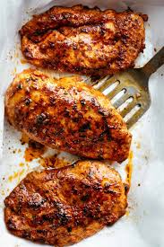

Savory Chicken

Looking for a mouth savory Chicken recipe? Well you've come to the right place,
This chicken recipe is sure to be packed with lots of juice and a ton of flavor!
Sure to fill up and appease any person looking for an amazing chicken recipe!
Ingredients
- chicken
- Salt
- Pepper
- Lemon
- 2 Tbsp of butter
- Oregano
Creation of the chicken
- Season the chicken with salt and pepper, then top it off with Oregano.
- Create little silts in the top of the chicken to make sure it cooks evenly and thoroughly
- Set pan to medium heat
- Slice the 2 Tbsp of butter into two peices and let it dissolve on the pan.
- Throw the seasoned chicken in on top
- Grate some lemon skin on top of the chicken
- Baste butter on top of the chicken
- Flip and cook all sides of the chicken
- Cook until internal temperature reaches 125F
- Allow chicken to set for 5 minutes
- Serve your savory and juicy chicken.